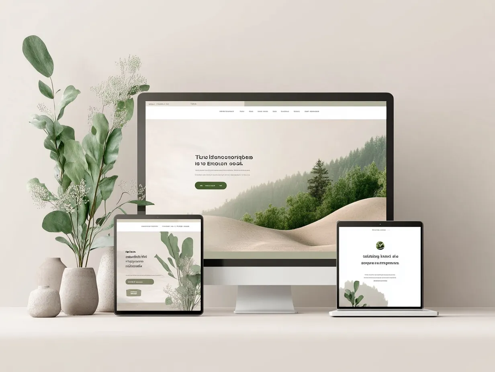
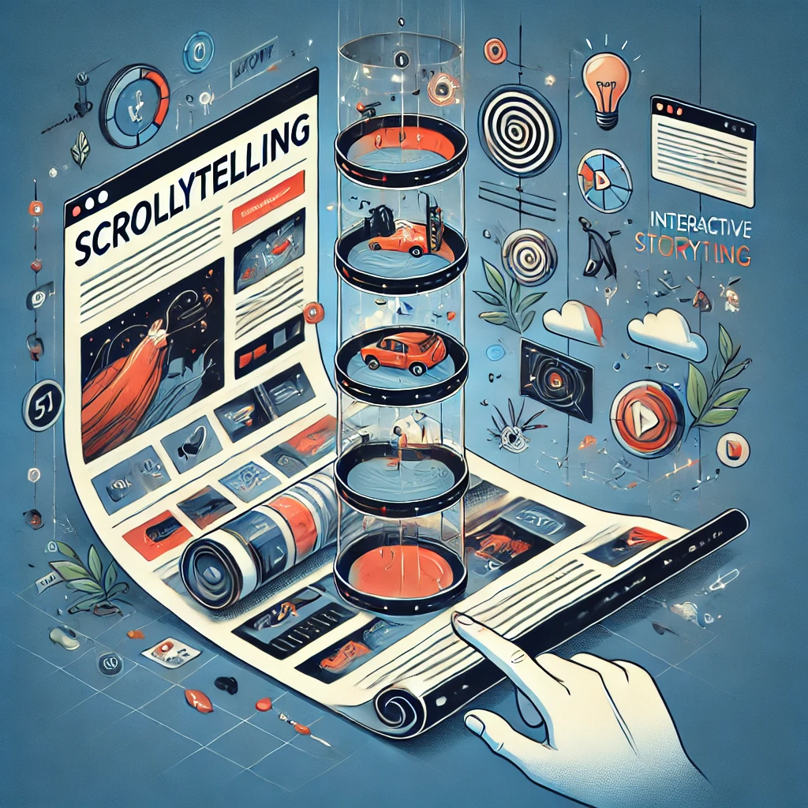
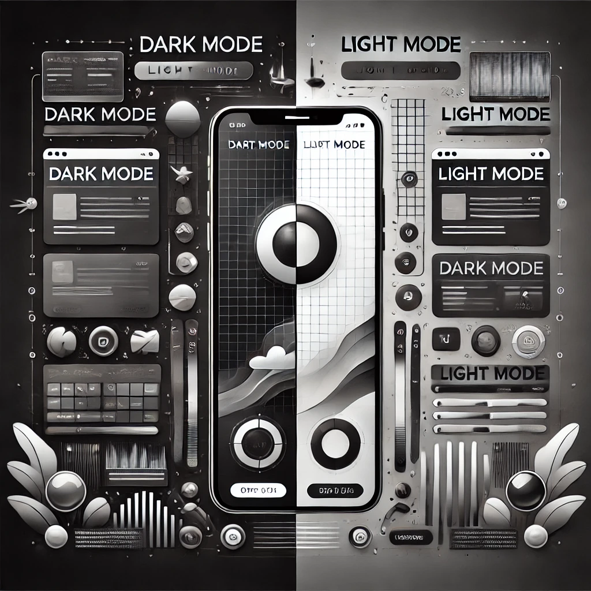

Świat projektowania stron internetowych nieustannie ewoluuje, dostosowując się do zmieniających się potrzeb użytkowników i możliwości technologicznych. Rok 2025 przynosi ze sobą fascynujące kierunki rozwoju, które łączą innowacyjne technologie z przemyślanym designem. Oto najważniejsze trendy, które będą dominować w projektowaniu stron internetowych w najbliższym czasie.
1. Immersyjne doświadczenia 3D
Technologia WebGL i WebGPU osiągnęła już taki poziom zaawansowania, że prawdziwie trójwymiarowe elementy stały się standardem w projektowaniu premium. W 2025 roku obserwujemy coraz więcej stron, które:
- Wykorzystują interaktywne modele 3D produktów, pozwalające użytkownikom obracać i przybliżać obiekty
- Oferują wirtualne spacery po przestrzeniach biznesowych
- Wdrażają elementy 3D jako integralną część opowiadania historii marki
- Tworzą płynne przejścia między światem 2D a 3D
Kluczem jest tutaj umiar i celowość – elementy 3D powinny wzbogacać przekaz, a nie rozpraszać użytkownika.
2. Projektowanie zorientowane na mikrointerakcje
Mikrointerakcje to drobne, ale znaczące elementy interfejsu, które reagują na działania użytkownika. W 2025 roku zyskują one nowy wymiar:
- Zaawansowane animacje przycisków i elementów nawigacyjnych
- Subtelne efekty dźwiękowe towarzyszące interakcjom
- Spersonalizowane reakcje interfejsu na zachowania użytkownika
- Płynne przejścia między stanami elementów
Dobrze zaprojektowane mikrointerakcje budują emocjonalną więź z użytkownikiem, czyniąc witrynę bardziej angażującą i przyjemną w obsłudze.
3. Zrównoważony i etyczny design
Świadomość ekologiczna wpływa także na projektowanie cyfrowe. Trend zrównoważonego designu w 2025 roku przejawia się przez:
- Optymalizację wydajności strony, zmniejszającą zużycie energii
- Świadomy dobór kolorów i grafik zmniejszający obciążenie serwerów
- Projektowanie z myślą o długowieczności strony, a nie o szybkim starzeniu się
- Transparentne informowanie o wpływie środowiskowym witryny
Coraz więcej firm komunikuje swoją odpowiedzialność ekologiczną również przez sposób projektowania swoich cyfrowych obecności.
4. Hiperpersonalizacja z użyciem AI
Sztuczna inteligencja zrewolucjonizowała sposób, w jaki strony internetowe dostosowują się do indywidualnych użytkowników:
- Dynamicznie zmieniające się layouty w zależności od preferencji użytkownika
- Systemy rekomendacji treści bazujące na zaawansowanym uczeniu maszynowym
- Chatboty i asystenci AI o naturalnych, konwersacyjnych interfejsach
- Personalizacja treści w czasie rzeczywistym na podstawie analizy zachowań
Strony internetowe w 2025 roku coraz częściej stają się inteligentnymi platformami, które uczą się od swoich użytkowników i dostosowują do ich potrzeb.
5. Projektowanie z myślą o dostępności
Dostępność nie jest już opcjonalnym dodatkiem, ale fundamentalnym elementem nowoczesnego projektowania:
- Pełna zgodność z najnowszymi standardami WCAG
- Zaawansowane narzędzia dostępności wbudowane w interfejs
- Alternatywne metody interakcji, jak sterowanie głosowe czy gesty
- Projektowanie inkluzywne, uwzględniające różnorodne potrzeby użytkowników
Strony, które ignorują dostępność, tracą nie tylko na wizerunku, ale także na zasięgu i efektywności biznesowej.
6. Minimalizm 2.0
Ewolucja minimalizmu prowadzi do bardziej wyrafinowanych form w 2025 roku:
- Przestrzenne układy z przemyślanym wykorzystaniem pustej przestrzeni
- Ograniczona, ale ekspresyjna paleta kolorów
- Typografia jako główny element wyrazu artystycznego
- Subtelne tekstury i gradienty dodające głębi minimalistycznym układom
Nowy minimalizm nie jest już sterylny – łączy prostotę z emocjonalnym charakterem i wyrazistością.
7. Scrollytelling i narracja wizualna
Opowiadanie historii poprzez przewijanie strony osiąga nowy poziom zaawansowania:
- Płynne animacje uruchamiane przez przewijanie
- Narracyjne doświadczenia z elementami interaktywnymi
- Paralaksa i efekty głębi wzmacniające immersję
- Integracja multimediów z tekstem w spójną całość narracyjną
Strony internetowe coraz częściej przypominają interaktywne reportaże, angażując użytkownika na poziomie emocjonalnym.
8. Projektowanie dla urządzeń składanych i adaptacyjnych
Nowa generacja urządzeń mobilnych wymaga nowego podejścia do responsywności:
- Interfejsy dostosowujące się do składanych ekranów
- Płynne przejścia między różnymi stanami wyświetlania
- Optymalizacja dla urządzeń o nietypowych proporcjach ekranu
- Wykorzystanie dodatkowych czujników w nowoczesnych urządzeniach
Projektowanie nie ogranicza się już do desktop/mobile, ale uwzględnia całe spektrum możliwych konfiguracji wyświetlania.
9. Dark mode i tryby kolorystyczne
Ciemne motywy ewoluują w kierunku pełnych systemów kolorystycznych:
- Zaawansowane adaptacyjne tryby kolorystyczne (nie tylko jasny/ciemny)
- Automatyczne dostosowanie do pory dnia i warunków oświetleniowych
- Personalizowalne schematy kolorów wybierane przez użytkownika
- Inteligentne algorytmy dostosowujące kontrast i nasycenie
Strony internetowe w 2025 roku oferują użytkownikom pełną kontrolę nad tym, jak je widzą i doświadczają.
10. Integracja z rzeczywistością rozszerzoną
Granica między stroną internetową a rzeczywistością staje się coraz bardziej płynna:
- Możliwość przymierzania produktów w AR bezpośrednio przez przeglądarkę
- Elementy webowe wchodzące w interakcję z rzeczywistością fizyczną
- Geolokalizowane doświadczenia łączące świat cyfrowy z fizycznym
- Wspólne doświadczenia AR dla wielu użytkowników jednocześnie
WebXR i pokrewne technologie otwierają zupełnie nowy wymiar projektowania interakcji.
Podsumowanie
Rok 2025 w projektowaniu stron internetowych to czas, gdy technologia i design łączą się w służbie głębszych wartości – dostępności, zrównoważonego rozwoju i autentycznych doświadczeń użytkownika. Najlepsze projekty nie będą te, które wykorzystają wszystkie powyższe trendy, ale te, które świadomie wybiorą elementy najlepiej służące ich użytkownikom i celom biznesowym. Niezależnie od zastosowanych technologii i estetyki, w centrum uwagi pozostaje człowiek i jego potrzeby – to fundament, który nigdy nie wyjdzie z mody.